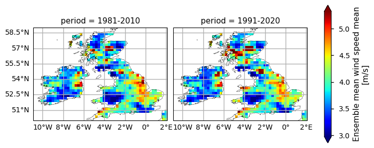

2.1. In-situ Wind speed completeness for climate monitoring#
Production date: 10/12/2025
Produced by: Beatriz Lopes and Ana Oliveira (CoLAB +ATLANTIC)
🌍 Use case: Assessment of Climate Change#
❓ Quality assessment question#
User Question: How consistent is the 30-year wind speed climatology over time?
In this Use Case, we will access the E-OBS daily gridded meteorological data for Europe from 1981 to present derived from in-situ observations (henceforth, E-OBS) data from the Climate Data Store (CDS) of the Copernicus Climate change Service (C3S and analyse) the spatial consistency of the E-OBS wind speed (WS) climatology, and its emsemble, over agiven Area of Interest (AoI), as a regional example of using E-OBS in the scope of the European State of Climate [1]. The analysis include:
(i) the climatology and probability density function of each alternative 30-year period available (i.e., 1981-2010, 1991-2020);
(ii) the comparison with ERA5 reanalysis and one HadISD in-situ station.
📢 Quality assessment statement#
These are the key outcomes of this assessment
Daily wind speed (WS) from E-OBS offers complete temporal-spatial coverage over the AoI, showing significative inter-annual variability and significant trends, consistent with findings reported in the literature [8][9].
According to [9], E-OBS demonstrates better accuracy in capturing local wind patterns, with E-OBS showing good agreement in regions with dense station networks and a better depiction of wind stilling trends.
As is the case with the previous studies focusing on the other E-OBS variables [4][5][6][7][8][9], this dataset tends to show a superior level of local detail, especially in regions with dense data.
The findings thus support that E-OBS is a reliable source of climate data for local applications, especially in locations where geographic factors may lead to more localized wind patterns, and when focusing on depicting wind stilling or extremes. Furthermore, by offering a tuned ensemble spread, E-OBS helps users to determine the uncertainty of their added-value applications, providing an efficient way of catering for uncertainty of their results. Indeed, as the density and location of all input stations are not fully available, the ensemble spread should be used as a complementary indicator of the confidence level and variability of WS.

Note
Figure A. Annual Mean Wind Speed Climatology: comparison between the 1981-2010 and 1991-2020 periods.
📋 Methodology#
This notebook provides an assessment of the WS completeness for climate monitoring from **E-OBS daily gridded meteorological data for Europe from 1950 to present derived from in-situ observations dataset, E-OBS. It achieves this by comparing the two 30-year climatological periods of 1981-2010 and 1991-2020. In particular, spatial patterns of annual and seasonal mean, along with ensemble spread, are examined and displayed for each period. This includes (i) the comparison of the full time series with ERA5 over the Area of Interest (AoI), and (ii) the comparison of both datasets with an in-situ station from the HadISD dataset. The analysis and results follow the next outline:
1. Define the AoI, search and download E-OBS
2. Analyse the annual climatology for alternative 30-year periods
3. Analyse the seasonal climatology for alternative 30-year periods
4. Compare E-OBS with the in-situ WS at the station 035900-99999
5. Compare E-OBS and situ WS climatologies at the station 035900-99999
6. Compare E-OBS, ERA5 and in-situ WS PDFs at the station 035900-99999
📈 Analysis and results#
1. Define the AoI, search and download E-OBS#
1.1. Import required packages#
We will be working with data in NetCDF format. To best handle this data, we will utilise libraries for working with multidimensional arrays, specifically Xarray. We will also need libraries for plotting and viewing data, specifically, we will use Matplotlib and Cartopy.
1.2. Data overview#
To search for data, visit the CDS website: http://cds.climate.copernicus.eu Here you can search for ‘in-situ observations’ using the search bar. The data we need for this tutorial is the E-OBS daily gridded meteorological data for Europe from 1950 to present, derived from in-situ observations. This catalogue entry provides a daily gridded dataset of historical meteorological observations, covering Europe (land-only), from 1950 to the present. This data is derived from in-situ meteorological stations, made available through the European Climate Assessment & Dataset (ECA&D) project, as provided by National Meteorological and Hydrological Services (NMHSs) and other data-holding institutes. E-OBS comprises a set of spatially continuous Essential Climate Variables (ECVs) from the Surface Atmosphere, following the Global Climate Observing System (GCOS) convention, provided as the mean and spread of the spatial prediction ensemble algorithm, at regular latitude-longitude grid intervals (at a 0.1° and 0.25° spatial resolution), and covering a long time-period, from 1 January 1950 to present-day. In addition to the land surface elevation, E-OBS includes daily air temperature (mean, maximum and minimum), precipitation amount, wind speed, sea-level pressure and shortwave downwelling radiation. The E-OBS version used for this Use Case, E-OBSv31.0e, was released in October 2023 and its main difference from the previous E-OBSv30.0e is the inclusion of new series. Having selected the correct dataset, we now need to specify what product type, variables, and temporal and geographic coverage we are interested in. In this Use Case, the ensemble mean of daily mean wind speed (FG) will be used, considering the last version available (31.0e). These can all be selected in the “Download data” tab from the CDS. In this tab, a form appears in which we will select the following parameters to download, for example:
Product Type: Ensemble mean
Variable: daily mean wind speed
Grid resolution: 0.25
Period: Full period
Version: 31.0e
Format: Zip file (.zip) At the end of the download form, select
Show API request. This will reveal a block of code, which you can simply copy and paste into a cell of your Jupyter Notebook …
1.3. Download and prepare E-OBS data#
… having copied the API request to a Jupyter Notebook cell, running it will retrieve and download the data you requested into your local directory. However, before you run it, the terms and conditions of this particular dataset need to have been accepted directly at the CDS website. The option to view and accept these conditions is given at the end of the download form, just above the Show API request option. In addition, it is also useful to define the time period and AoI parameters and edit the request accordingly, as exemplified in the cells below. Furthermore, in this use case, the following 30-year climatological periods are considered, as per the guidelines from WMO [3]:
1981 to 2010
1991 to 2020
1.4. Define the required functions#
To proceed with the analysis, it is useful to define some helper functions.
The
dayofyear_reindexfunction calculates the day of the year and adds it as an additional coordinate, along with the climatologicalperiodsestablished earlierThe
spatial_weighted_meanfunction extracts the spatial-weighted mean over the selected domains, accounting for the latitudinal dependence of the grid area and size which will be used for the analysis.The
make_statistics_dataframefunction converts the standard descriptive statistics of the spatial weighted mean results over the time dimension, considering the climatological periods chosen beforeThe
compute_histfunction converts the data into histogramsThe
plot_pdffunction plots the data into Probability Density Functions (PDFs) format
Having defined the helper functions and download parameters, we will proceed with downloading the E-OBS dataset. We will also download the ERA5 reanalysis for comparison purposes.
reduction='mean'
0%| | 0/1 [00:00<?, ?it/s]2025-12-11 14:04:05,309 INFO [2025-12-03T00:00:00Z] To improve our C3S service, we need to hear from you! Please complete this very short [survey](https://confluence.ecmwf.int/x/E7uBEQ/). Thank you.
2025-12-11 14:04:05,485 INFO [2025-12-03T00:00:00Z] To improve our C3S service, we need to hear from you! Please complete this very short [survey](https://confluence.ecmwf.int/x/E7uBEQ/). Thank you.
2025-12-11 14:04:05,695 INFO Request ID is 15ef1fee-f7ef-45f0-99ca-3ee470dc1915
2025-12-11 14:04:05,931 INFO status has been updated to accepted
2025-12-11 14:04:19,517 INFO status has been updated to running
Recovering from connection error [('Connection aborted.', RemoteDisconnected('Remote end closed connection without response'))], attemps 1 of 500
Retrying in 120 seconds
2025-12-11 14:07:46,006 INFO status has been updated to successful
100%|██████████| 1/1 [05:49<00:00, 349.75s/it]
reduction='spread'
0%| | 0/1 [00:00<?, ?it/s]2025-12-11 14:09:54,905 INFO [2025-12-03T00:00:00Z] To improve our C3S service, we need to hear from you! Please complete this very short [survey](https://confluence.ecmwf.int/x/E7uBEQ/). Thank you.
2025-12-11 14:09:55,068 INFO [2025-12-03T00:00:00Z] To improve our C3S service, we need to hear from you! Please complete this very short [survey](https://confluence.ecmwf.int/x/E7uBEQ/). Thank you.
2025-12-11 14:09:55,244 INFO Request ID is 6048f0cb-81c0-40e5-b759-e30f110c0e3b
2025-12-11 14:09:55,303 INFO status has been updated to accepted
2025-12-11 14:10:08,861 INFO status has been updated to running
2025-12-11 14:10:27,959 INFO status has been updated to successful
100%|██████████| 1/1 [02:36<00:00, 156.38s/it]
100%|██████████| 1/1 [01:06<00:00, 66.66s/it]
<xarray.DataArray 'fg' (time: 14610)> Size: 117kB
dask.array<getitem, shape=(14610,), dtype=float64, chunksize=(14610,), chunktype=numpy.ndarray>
Coordinates:
* time (time) datetime64[ns] 117kB 1981-01-01 1981-01-02 ... 2020-12-31
Attributes:
standard_name: wind_speed
long_name: Ensemble mean wind speed
units: m/s2025-12-11 14:24:35,787 INFO [2025-12-03T00:00:00Z] To improve our C3S service, we need to hear from you! Please complete this very short [survey](https://confluence.ecmwf.int/x/E7uBEQ/). Thank you.
2025-12-11 14:24:35,798 INFO [2025-12-03T00:00:00Z] To improve our C3S service, we need to hear from you! Please complete this very short [survey](https://confluence.ecmwf.int/x/E7uBEQ/). Thank you.
2025-12-11 14:24:35,973 INFO [2025-12-03T00:00:00Z] To improve our C3S service, we need to hear from you! Please complete this very short [survey](https://confluence.ecmwf.int/x/E7uBEQ/). Thank you.
2025-12-11 14:24:35,973 INFO [2025-12-03T00:00:00Z] To improve our C3S service, we need to hear from you! Please complete this very short [survey](https://confluence.ecmwf.int/x/E7uBEQ/). Thank you.
2025-12-11 14:24:36,259 INFO Request ID is 559d0bde-4cc9-4389-949f-f556e7ce6810
2025-12-11 14:24:36,273 INFO Request ID is 63698810-6320-460f-af91-878320f937c2
2025-12-11 14:24:36,342 INFO status has been updated to accepted
2025-12-11 14:24:36,346 INFO status has been updated to accepted
2025-12-11 14:28:55,804 INFO status has been updated to running
2025-12-11 14:32:55,808 INFO status has been updated to running
2025-12-11 14:32:56,274 INFO status has been updated to successful
2025-12-11 14:32:58,515 INFO [2025-12-03T00:00:00Z] To improve our C3S service, we need to hear from you! Please complete this very short [survey](https://confluence.ecmwf.int/x/E7uBEQ/). Thank you.
2025-12-11 14:32:58,700 INFO [2025-12-03T00:00:00Z] To improve our C3S service, we need to hear from you! Please complete this very short [survey](https://confluence.ecmwf.int/x/E7uBEQ/). Thank you.
2025-12-11 14:32:59,129 INFO Request ID is 77f899cb-c505-443f-bb49-6e2a09028262
2025-12-11 14:32:59,216 INFO status has been updated to accepted
2025-12-11 14:36:56,274 INFO status has been updated to successful
2025-12-11 14:36:58,546 INFO [2025-12-03T00:00:00Z] To improve our C3S service, we need to hear from you! Please complete this very short [survey](https://confluence.ecmwf.int/x/E7uBEQ/). Thank you.
2025-12-11 14:36:58,731 INFO [2025-12-03T00:00:00Z] To improve our C3S service, we need to hear from you! Please complete this very short [survey](https://confluence.ecmwf.int/x/E7uBEQ/). Thank you.
2025-12-11 14:36:59,290 INFO Request ID is ac834ef5-51cd-4bdc-a9a7-759844d8d0f6
2025-12-11 14:36:59,372 INFO status has been updated to accepted
2025-12-11 14:41:18,667 INFO status has been updated to running
2025-12-11 14:45:18,501 INFO status has been updated to running
2025-12-11 14:45:19,148 INFO status has been updated to successful
2025-12-11 14:45:20,678 INFO [2025-12-03T00:00:00Z] To improve our C3S service, we need to hear from you! Please complete this very short [survey](https://confluence.ecmwf.int/x/E7uBEQ/). Thank you.
2025-12-11 14:45:20,863 INFO [2025-12-03T00:00:00Z] To improve our C3S service, we need to hear from you! Please complete this very short [survey](https://confluence.ecmwf.int/x/E7uBEQ/). Thank you.
2025-12-11 14:45:21,128 INFO Request ID is 6de9190a-7d47-44b8-b376-3b49878524a8
2025-12-11 14:45:21,196 INFO status has been updated to accepted
2025-12-11 14:49:19,034 INFO status has been updated to successful
2025-12-11 14:49:20,744 INFO [2025-12-03T00:00:00Z] To improve our C3S service, we need to hear from you! Please complete this very short [survey](https://confluence.ecmwf.int/x/E7uBEQ/). Thank you.
2025-12-11 14:49:20,951 INFO [2025-12-03T00:00:00Z] To improve our C3S service, we need to hear from you! Please complete this very short [survey](https://confluence.ecmwf.int/x/E7uBEQ/). Thank you.
2025-12-11 14:49:21,324 INFO Request ID is fe53781d-546d-4db2-bd00-7a8cae0cdbd4
2025-12-11 14:49:21,403 INFO status has been updated to accepted
2025-12-11 14:53:40,272 INFO status has been updated to running
2025-12-11 14:57:40,585 INFO status has been updated to running
2025-12-11 14:57:40,704 INFO status has been updated to successful
2025-12-11 14:57:42,270 INFO [2025-12-03T00:00:00Z] To improve our C3S service, we need to hear from you! Please complete this very short [survey](https://confluence.ecmwf.int/x/E7uBEQ/). Thank you.
2025-12-11 14:57:42,431 INFO [2025-12-03T00:00:00Z] To improve our C3S service, we need to hear from you! Please complete this very short [survey](https://confluence.ecmwf.int/x/E7uBEQ/). Thank you.
2025-12-11 14:57:42,839 INFO Request ID is d1631acb-5d45-43b7-ab02-9bd0938229f6
2025-12-11 14:57:42,906 INFO status has been updated to accepted
2025-12-11 15:01:41,058 INFO status has been updated to successful
2025-12-11 15:01:43,158 INFO [2025-12-03T00:00:00Z] To improve our C3S service, we need to hear from you! Please complete this very short [survey](https://confluence.ecmwf.int/x/E7uBEQ/). Thank you.
2025-12-11 15:01:43,324 INFO [2025-12-03T00:00:00Z] To improve our C3S service, we need to hear from you! Please complete this very short [survey](https://confluence.ecmwf.int/x/E7uBEQ/). Thank you.
2025-12-11 15:01:43,643 INFO Request ID is 2cf33116-c49e-4dca-8726-a5e07c5634a4
2025-12-11 15:01:43,721 INFO status has been updated to accepted
2025-12-11 15:06:03,522 INFO status has been updated to running
2025-12-11 15:10:04,017 INFO status has been updated to successful
2025-12-11 15:10:04,259 INFO status has been updated to running
2025-12-11 15:10:06,277 INFO [2025-12-03T00:00:00Z] To improve our C3S service, we need to hear from you! Please complete this very short [survey](https://confluence.ecmwf.int/x/E7uBEQ/). Thank you.
2025-12-11 15:10:06,445 INFO [2025-12-03T00:00:00Z] To improve our C3S service, we need to hear from you! Please complete this very short [survey](https://confluence.ecmwf.int/x/E7uBEQ/). Thank you.
2025-12-11 15:10:06,770 INFO Request ID is 1d828c31-5341-460a-a74d-45e075a0edf4
2025-12-11 15:10:06,829 INFO status has been updated to accepted
2025-12-11 15:14:04,778 INFO status has been updated to successful
2025-12-11 15:14:06,497 INFO [2025-12-03T00:00:00Z] To improve our C3S service, we need to hear from you! Please complete this very short [survey](https://confluence.ecmwf.int/x/E7uBEQ/). Thank you.
2025-12-11 15:14:06,669 INFO [2025-12-03T00:00:00Z] To improve our C3S service, we need to hear from you! Please complete this very short [survey](https://confluence.ecmwf.int/x/E7uBEQ/). Thank you.
2025-12-11 15:14:06,962 INFO Request ID is cf036d83-0688-4d70-b95e-c6c6f1745cca
2025-12-11 15:14:07,132 INFO status has been updated to accepted
2025-12-11 15:20:26,790 INFO status has been updated to running
2025-12-11 15:22:26,365 INFO status has been updated to running
2025-12-11 15:22:26,969 INFO status has been updated to successful
2025-12-11 15:22:28,745 INFO [2025-12-03T00:00:00Z] To improve our C3S service, we need to hear from you! Please complete this very short [survey](https://confluence.ecmwf.int/x/E7uBEQ/). Thank you.
2025-12-11 15:22:28,918 INFO [2025-12-03T00:00:00Z] To improve our C3S service, we need to hear from you! Please complete this very short [survey](https://confluence.ecmwf.int/x/E7uBEQ/). Thank you.
2025-12-11 15:22:29,292 INFO Request ID is 2866c685-91ed-49b6-be71-6236d012cffa
2025-12-11 15:22:29,381 INFO status has been updated to accepted
2025-12-11 15:26:26,827 INFO status has been updated to successful
2025-12-11 15:26:28,210 INFO [2025-12-03T00:00:00Z] To improve our C3S service, we need to hear from you! Please complete this very short [survey](https://confluence.ecmwf.int/x/E7uBEQ/). Thank you.
2025-12-11 15:26:28,386 INFO [2025-12-03T00:00:00Z] To improve our C3S service, we need to hear from you! Please complete this very short [survey](https://confluence.ecmwf.int/x/E7uBEQ/). Thank you.
2025-12-11 15:26:28,660 INFO Request ID is 67b30cd9-2544-4552-8152-81d029a8abac
2025-12-11 15:26:28,734 INFO status has been updated to accepted
2025-12-11 15:32:49,712 INFO status has been updated to running
2025-12-11 15:34:47,786 INFO status has been updated to running
2025-12-11 15:34:49,878 INFO status has been updated to successful
2025-12-11 15:34:51,353 INFO [2025-12-03T00:00:00Z] To improve our C3S service, we need to hear from you! Please complete this very short [survey](https://confluence.ecmwf.int/x/E7uBEQ/). Thank you.
2025-12-11 15:34:51,524 INFO [2025-12-03T00:00:00Z] To improve our C3S service, we need to hear from you! Please complete this very short [survey](https://confluence.ecmwf.int/x/E7uBEQ/). Thank you.
2025-12-11 15:34:51,804 INFO Request ID is 6842dc21-b71f-4dc1-be7c-8c9dc4f3d50d
2025-12-11 15:34:51,971 INFO status has been updated to accepted
2025-12-11 15:38:48,292 INFO status has been updated to successful
2025-12-11 15:38:49,616 INFO [2025-12-03T00:00:00Z] To improve our C3S service, we need to hear from you! Please complete this very short [survey](https://confluence.ecmwf.int/x/E7uBEQ/). Thank you.
2025-12-11 15:38:49,777 INFO [2025-12-03T00:00:00Z] To improve our C3S service, we need to hear from you! Please complete this very short [survey](https://confluence.ecmwf.int/x/E7uBEQ/). Thank you.
2025-12-11 15:38:50,161 INFO Request ID is 265f76e8-19a6-42a4-91b0-775f702d2b90
2025-12-11 15:38:50,229 INFO status has been updated to accepted
2025-12-11 15:45:11,721 INFO status has been updated to running
2025-12-11 15:47:09,600 INFO status has been updated to running
2025-12-11 15:47:11,921 INFO status has been updated to successful
2025-12-11 15:47:13,504 INFO [2025-12-03T00:00:00Z] To improve our C3S service, we need to hear from you! Please complete this very short [survey](https://confluence.ecmwf.int/x/E7uBEQ/). Thank you.
2025-12-11 15:47:13,678 INFO [2025-12-03T00:00:00Z] To improve our C3S service, we need to hear from you! Please complete this very short [survey](https://confluence.ecmwf.int/x/E7uBEQ/). Thank you.
2025-12-11 15:47:14,449 INFO Request ID is 35e77da3-8d91-495d-b2a4-cbcf05ed1310
2025-12-11 15:47:14,741 INFO status has been updated to accepted
2025-12-11 15:51:10,087 INFO status has been updated to successful
2025-12-11 15:51:11,462 INFO [2025-12-03T00:00:00Z] To improve our C3S service, we need to hear from you! Please complete this very short [survey](https://confluence.ecmwf.int/x/E7uBEQ/). Thank you.
2025-12-11 15:51:11,622 INFO [2025-12-03T00:00:00Z] To improve our C3S service, we need to hear from you! Please complete this very short [survey](https://confluence.ecmwf.int/x/E7uBEQ/). Thank you.
2025-12-11 15:51:11,916 INFO Request ID is e32f0764-a2bd-4a2f-8d37-c50900b55fdf
2025-12-11 15:51:11,988 INFO status has been updated to accepted
2025-12-11 15:57:33,957 INFO status has been updated to running
2025-12-11 15:59:31,520 INFO status has been updated to running
2025-12-11 15:59:34,240 INFO status has been updated to successful
2025-12-11 15:59:40,968 INFO [2025-12-03T00:00:00Z] To improve our C3S service, we need to hear from you! Please complete this very short [survey](https://confluence.ecmwf.int/x/E7uBEQ/). Thank you.
2025-12-11 15:59:41,162 INFO [2025-12-03T00:00:00Z] To improve our C3S service, we need to hear from you! Please complete this very short [survey](https://confluence.ecmwf.int/x/E7uBEQ/). Thank you.
2025-12-11 15:59:41,577 INFO Request ID is f923ccec-c705-4b31-950e-fffc5635b870
2025-12-11 15:59:41,641 INFO status has been updated to accepted
2025-12-11 16:03:32,001 INFO status has been updated to successful
2025-12-11 16:03:34,079 INFO [2025-12-03T00:00:00Z] To improve our C3S service, we need to hear from you! Please complete this very short [survey](https://confluence.ecmwf.int/x/E7uBEQ/). Thank you.
2025-12-11 16:03:34,240 INFO [2025-12-03T00:00:00Z] To improve our C3S service, we need to hear from you! Please complete this very short [survey](https://confluence.ecmwf.int/x/E7uBEQ/). Thank you.
2025-12-11 16:03:34,718 INFO Request ID is ace9776c-f12c-4639-9752-f82d41de9436
2025-12-11 16:03:34,797 INFO status has been updated to accepted
2025-12-11 16:10:00,946 INFO status has been updated to running
2025-12-11 16:12:03,156 INFO status has been updated to successful
2025-12-11 16:12:05,161 INFO [2025-12-03T00:00:00Z] To improve our C3S service, we need to hear from you! Please complete this very short [survey](https://confluence.ecmwf.int/x/E7uBEQ/). Thank you.
2025-12-11 16:12:05,326 INFO [2025-12-03T00:00:00Z] To improve our C3S service, we need to hear from you! Please complete this very short [survey](https://confluence.ecmwf.int/x/E7uBEQ/). Thank you.
2025-12-11 16:12:05,693 INFO Request ID is d03f8dbe-d5c4-4ee6-8e6e-999b0b0b6d1d
2025-12-11 16:12:05,767 INFO status has been updated to accepted
2025-12-11 16:13:54,067 INFO status has been updated to running
2025-12-11 16:15:54,292 INFO status has been updated to successful
2025-12-11 16:15:55,605 INFO [2025-12-03T00:00:00Z] To improve our C3S service, we need to hear from you! Please complete this very short [survey](https://confluence.ecmwf.int/x/E7uBEQ/). Thank you.
2025-12-11 16:15:55,780 INFO [2025-12-03T00:00:00Z] To improve our C3S service, we need to hear from you! Please complete this very short [survey](https://confluence.ecmwf.int/x/E7uBEQ/). Thank you.
2025-12-11 16:15:56,112 INFO Request ID is ce90a053-4a84-4021-8a42-428d247b8e6c
2025-12-11 16:15:56,200 INFO status has been updated to accepted
2025-12-11 16:22:25,154 INFO status has been updated to running
2025-12-11 16:24:15,509 INFO status has been updated to running
2025-12-11 16:24:25,396 INFO status has been updated to successful
2025-12-11 16:24:26,926 INFO [2025-12-03T00:00:00Z] To improve our C3S service, we need to hear from you! Please complete this very short [survey](https://confluence.ecmwf.int/x/E7uBEQ/). Thank you.
2025-12-11 16:24:27,092 INFO [2025-12-03T00:00:00Z] To improve our C3S service, we need to hear from you! Please complete this very short [survey](https://confluence.ecmwf.int/x/E7uBEQ/). Thank you.
2025-12-11 16:24:27,502 INFO Request ID is f5756821-0115-46a0-be9c-186e8781c713
2025-12-11 16:24:27,568 INFO status has been updated to accepted
2025-12-11 16:28:15,984 INFO status has been updated to successful
2025-12-11 16:28:17,374 INFO [2025-12-03T00:00:00Z] To improve our C3S service, we need to hear from you! Please complete this very short [survey](https://confluence.ecmwf.int/x/E7uBEQ/). Thank you.
2025-12-11 16:28:17,549 INFO [2025-12-03T00:00:00Z] To improve our C3S service, we need to hear from you! Please complete this very short [survey](https://confluence.ecmwf.int/x/E7uBEQ/). Thank you.
2025-12-11 16:28:17,925 INFO Request ID is 2a352962-cc80-47f2-859e-2f6509281922
2025-12-11 16:28:18,005 INFO status has been updated to accepted
2025-12-11 16:28:46,278 INFO status has been updated to running
2025-12-11 16:31:10,411 INFO status has been updated to running
2025-12-11 16:32:46,781 INFO status has been updated to successful
2025-12-11 16:32:48,927 INFO [2025-12-03T00:00:00Z] To improve our C3S service, we need to hear from you! Please complete this very short [survey](https://confluence.ecmwf.int/x/E7uBEQ/). Thank you.
2025-12-11 16:32:49,122 INFO [2025-12-03T00:00:00Z] To improve our C3S service, we need to hear from you! Please complete this very short [survey](https://confluence.ecmwf.int/x/E7uBEQ/). Thank you.
2025-12-11 16:32:51,133 INFO Request ID is 67254224-5a3a-431e-b497-b43071f6fe15
2025-12-11 16:32:51,201 INFO status has been updated to accepted
2025-12-11 16:34:37,477 INFO status has been updated to successful
2025-12-11 16:34:38,801 INFO [2025-12-03T00:00:00Z] To improve our C3S service, we need to hear from you! Please complete this very short [survey](https://confluence.ecmwf.int/x/E7uBEQ/). Thank you.
2025-12-11 16:34:38,989 INFO [2025-12-03T00:00:00Z] To improve our C3S service, we need to hear from you! Please complete this very short [survey](https://confluence.ecmwf.int/x/E7uBEQ/). Thank you.
2025-12-11 16:34:39,327 INFO Request ID is e04de682-050b-44ac-84d4-a7e476b7c751
2025-12-11 16:34:39,404 INFO status has been updated to accepted
2025-12-11 16:34:45,248 INFO status has been updated to running
2025-12-11 16:38:58,267 INFO status has been updated to running
2025-12-11 16:39:10,129 INFO status has been updated to successful
2025-12-11 16:39:11,712 INFO [2025-12-03T00:00:00Z] To improve our C3S service, we need to hear from you! Please complete this very short [survey](https://confluence.ecmwf.int/x/E7uBEQ/). Thank you.
2025-12-11 16:39:11,898 INFO [2025-12-03T00:00:00Z] To improve our C3S service, we need to hear from you! Please complete this very short [survey](https://confluence.ecmwf.int/x/E7uBEQ/). Thank you.
2025-12-11 16:39:12,495 INFO Request ID is a74a55f4-7615-401e-8457-87b7bad1747b
2025-12-11 16:39:12,575 INFO status has been updated to accepted
2025-12-11 16:42:04,483 INFO status has been updated to running
2025-12-11 16:42:58,754 INFO status has been updated to successful
2025-12-11 16:43:00,453 INFO [2025-12-03T00:00:00Z] To improve our C3S service, we need to hear from you! Please complete this very short [survey](https://confluence.ecmwf.int/x/E7uBEQ/). Thank you.
2025-12-11 16:43:00,648 INFO [2025-12-03T00:00:00Z] To improve our C3S service, we need to hear from you! Please complete this very short [survey](https://confluence.ecmwf.int/x/E7uBEQ/). Thank you.
2025-12-11 16:43:01,064 INFO Request ID is bf92a59e-4e77-45e2-b09b-b44ed39ffef2
2025-12-11 16:43:01,126 INFO status has been updated to accepted
2025-12-11 16:44:55,203 INFO status has been updated to running
<xarray.DataArray (time: 116880)> Size: 935kB
dask.array<sqrt, shape=(116880,), dtype=float64, chunksize=(2928,), chunktype=numpy.ndarray>
Coordinates:
* time (time) datetime64[ns] 935kB 1981-01-01 ... 2020-12-31T21:00:00
realization int64 8B 0
surface float64 8B 0.0<xarray.DataArray (time: 14610)> Size: 117kB
dask.array<groupby_nanmean, shape=(14610,), dtype=float64, chunksize=(366,), chunktype=numpy.ndarray>
Coordinates:
* time (time) datetime64[ns] 117kB 1981-01-01 ... 2020-12-31
realization int64 8B 0
surface float64 8B 0.0<xarray.DataArray 'wind_speed' (time: 14610)> Size: 117kB
dask.array<groupby_nanmean, shape=(14610,), dtype=float64, chunksize=(366,), chunktype=numpy.ndarray>
Coordinates:
* time (time) datetime64[ns] 117kB 1981-01-01 ... 2020-12-31
realization int64 8B 0
surface float64 8B 0.0<xarray.DataArray 'fg' (time: 14610)> Size: 117kB
dask.array<groupby_nanmean, shape=(14610,), dtype=float64, chunksize=(14610,), chunktype=numpy.ndarray>
Coordinates:
* time (time) datetime64[ns] 117kB 1981-01-01 1981-01-02 ... 2020-12-31
Attributes:
standard_name: wind_speed
long_name: Ensemble mean wind speed
units: m/s<xarray.DataArray 'wind_speed' (product: 2, time: 14610)> Size: 234kB
dask.array<concatenate, shape=(2, 14610), dtype=float64, chunksize=(1, 366), chunktype=numpy.ndarray>
Coordinates:
* product (product) object 16B 'ERA5' 'EOBS'
* time (time) datetime64[ns] 117kB 1981-01-01 ... 2020-12-31
realization int64 8B 0
surface float64 8B 0.01.5. Download in-situ data and EOBS timeseries for the station 035900-99999#
To further assess the E-OBS WS consistency we are going add to the analysis the HadISD in-situ stations. HadISD is a global sub-daily dataset based in the National Oceanic and Atmospheric Admnistration (NOAA) ISD dataset. The variables present in the dataset are quality controlled for wind speed and direction, as well for temperature, dewpoint temperature, sea-level pressure and cloud data. The data are provided as netCDF files, one per station. https://www.metoffice.gov.uk/hadobs/hadisd/ We are going to use the station 035900-99999.
<xarray.Dataset> Size: 411MB
Dimensions: (time: 449803, test: 71, flagged: 19,
reporting_v: 19, reporting_t: 1140, reporting_2: 2,
coordinate_length: 1)
Coordinates:
* time (time) datetime64[ns] 4MB 1973-01-01 ... 2025-08-2...
longitude (coordinate_length) float64 8B dask.array<chunksize=(1,), meta=np.ndarray>
latitude (coordinate_length) float64 8B dask.array<chunksize=(1,), meta=np.ndarray>
elevation (coordinate_length) float64 8B dask.array<chunksize=(1,), meta=np.ndarray>
Dimensions without coordinates: test, flagged, reporting_v, reporting_t,
reporting_2, coordinate_length
Data variables: (12/27)
station_id |S12 12B ...
temperatures (time) float64 4MB dask.array<chunksize=(449803,), meta=np.ndarray>
dewpoints (time) float64 4MB dask.array<chunksize=(449803,), meta=np.ndarray>
slp (time) float64 4MB dask.array<chunksize=(449803,), meta=np.ndarray>
stnlp (time) float64 4MB dask.array<chunksize=(449803,), meta=np.ndarray>
windspeeds (time) float64 4MB dask.array<chunksize=(449803,), meta=np.ndarray>
... ...
wind_gust (time) float64 4MB dask.array<chunksize=(449803,), meta=np.ndarray>
past_sigwx1 (time) float64 4MB dask.array<chunksize=(449803,), meta=np.ndarray>
input_station_id (time) object 4MB dask.array<chunksize=(449803,), meta=np.ndarray>
quality_control_flags (time, test) float64 255MB dask.array<chunksize=(112451, 15), meta=np.ndarray>
flagged_obs (time, flagged) float64 68MB dask.array<chunksize=(149935, 7), meta=np.ndarray>
reporting_stats (reporting_v, reporting_t, reporting_2) float64 347kB dask.array<chunksize=(19, 1140, 2), meta=np.ndarray>
Attributes: (12/39)
title: HadISD
institution: Met Office Hadley Centre, Exeter, UK
source: HadISD data product
references: Dunn, 2019, Met Office Hadley Centre Technic...
creator_name: Robert Dunn
creator_url: www.metoffice.gov.uk
... ...
station_information: Where station is a composite the station id ...
Conventions: CF-1.6
Metadata_Conventions: Unidata Dataset Discovery v1.0, CF Discrete ...
featureType: timeSeries
processing_date: 01-Oct-2025
history: Created by mk_netcdf_files.py \nDuplicate Mo...Now we can plot the station 035900-99999 location in the AoI.

We will download the WS data from both E-OBS and ERA5 for the pixel closest to the station 035900-99999. Since the station coordinates do not exactly match the E-OBS and ERA5 grid points, we will first select a small area around the station and then identify the nearest pixel within that area.
100%|██████████| 1/1 [00:01<00:00, 1.10s/it]
100%|██████████| 40/40 [00:03<00:00, 10.28it/s]
/data/common/miniforge3/envs/wp5/lib/python3.12/site-packages/earthkit/data/utils/kwargs.py:59: UserWarning: In xarray_open_dataset_kwargs backend_kwargs, overriding the default value (squeeze=False) with squeeze=True is not recommended.
warnings.warn(
<xarray.DataArray 'windspeeds' (product: 3, time: 14610)> Size: 351kB
dask.array<concatenate, shape=(3, 14610), dtype=float64, chunksize=(1, 1), chunktype=numpy.ndarray>
Coordinates:
* product (product) object 24B 'in-situ' 'EOBS' 'ERA5'
* time (time) datetime64[ns] 117kB 1981-01-01 ... 2020-12-31
longitude float64 8B 0.975
latitude float64 8B 52.12
elevation float64 8B dask.array<chunksize=(), meta=np.ndarray>
realization int64 8B ...
surface float64 8B ...
Attributes:
long_name: Wind speed at mast height (~10m)
units: meters per second
flagged_value: -2e+30
valid_min: 0.0
valid_max: 31.4
standard_name: wind_speed
cell_methods: latitude: longitude: time: point (nearest to reporting hour)1.6. Inspect and view the data#
Now that we have downloaded the data, we can inspect it. We have requested the data in NetCDF format. This is a commonly used format for array-oriented scientific data. To read and process this data, we will make use of the Xarray library. Xarray is an open source project and Python package that makes working with labelled multi-dimensional arrays simple and efficient. We will read the data from our NetCDF file into an xarray.Dataset.
To better understand the E-OBS data structure and check the aggregated Daily Mean WS, we will first need to retrieve the WS variable from the 2 multidimensional netCDF data structures and calculate the descriptive statistics.
<xarray.Dataset> Size: 11MB
Dimensions: (longitude: 52, latitude: 36, dayofyear: 366, period: 2)
Coordinates:
* longitude (longitude) float64 416B -10.77 -10.52 -10.27 ... 1.725 1.975
* latitude (latitude) float64 288B 50.12 50.38 50.62 ... 58.38 58.62 58.88
* dayofyear (dayofyear) int64 3kB 1 2 3 4 5 6 7 ... 361 362 363 364 365 366
* period (period) <U9 72B '1981-2010' '1991-2020'
season (dayofyear) <U3 4kB dask.array<chunksize=(366,), meta=np.ndarray>
Data variables:
mean (period, dayofyear, latitude, longitude) float32 5MB dask.array<chunksize=(2, 366, 36, 52), meta=np.ndarray>
spread (period, dayofyear, latitude, longitude) float32 5MB dask.array<chunksize=(2, 366, 36, 52), meta=np.ndarray>
Attributes:
standard_name: wind_speed
long_name: Ensemble mean wind speed mean
units: m/sWe can see from the data structure that our information is already stored in a four-dimensional array with two data variables, corresponding to the WS ‘mean’ and ensemble ‘spread’, with dimensions: 2 time periods in ‘period’, 366 days in ‘dayofyear’, 36 steps in ‘latitude’, and 52 steps in ‘longitude’. This is because the toolbox provides an already post-processed output with the values calculated using the transformer function. In this use case, the following 30-years climatological periods are considered, as per the guidelines from WMO [3]:
1981 to 2010
1991 to 2020
This reduces the amount of data to be processed and stored locally, facilitating the next steps. Let’s inspect the data and compute the basic descriptive statistics of each period and print them in tabular form.
| period | number | mean | maximum | minimum | st.deviation | |
|---|---|---|---|---|---|---|
| 0 | 1981-2010 | 219600 | 3.902579 | 10.733822 | 2.209356 | 0.688963 |
| 1 | 1991-2020 | 219600 | 3.949386 | 11.703578 | 1.882400 | 0.758773 |
| period | number | mean | maximum | minimum | st.deviation | |
|---|---|---|---|---|---|---|
| 0 | 1981-2010 | 219600 | 3.989577 | 12.051609 | 0.798089 | 1.480452 |
| 1 | 1991-2020 | 219600 | 3.965940 | 13.503096 | 0.717911 | 1.543533 |
As we can see from the descriptive statistics, both climatology periods are characterised by similar mean WS. In the AoI, the mean annual WS between 1991 and 2020 is 3.95 m/s, less than -0.05 above the equivalent in 1981 to 2010, while the annual maximum increased less than 1 m/s and the minimum decreased less than 0.4 m/s. The WS spread decreased for the mean and minimum values by less than 0.08 m/s, although the maximum increased by approximately 1.5 m/s. To further explore these findings, let’s compare E-OBS and ERA5 over the AoI.
To do this, we need to create a set of weights based on latitude values. The weighted method is used to create a weighted dataset. Any subsequent aggregation operations (such as mean, sum, etc.) will take these weights into account. These weights can be used to account for the varying area of grid cells in latitude-longitude grids to ensure that calculations properly account for varying areas represented by grid cells at different latitudes.
Now we will proceed with merging WS from both datasets.
ERA5 shape: (1, 14610)
EOBS shape: (1, 14610)

These time series plots show that both datasets have overall similar average variability but contrasting absolute WS range in terms of extreme values, with E-OBS showing very few cases of daily mean WS > 10 m/s. Furthermore, the same pattern is found when specific years of minimum and maximum mean values are analysed: 1987 is shown to have several days surpassing 8 m/s WS, whereas in 2010, many more days reached this value (in E-OBS). ERA5 shows average agreement, with much greater variability and more extreme maximum and minimum values.
2. Analyse the annual climatology for alternative 30-year periods#
2.1. Calculate and plot annual mean WS maps and PDFs#
With the subsets per period already created, now it is time to calculate the climatological mean over each Time of Interest (ToI). Here, the calculation of the annual mean WS map for each day of the year (DOY) is done, while considering a 15-day Simple Moving Average (SMA), in order to smooth the inter-day variability.
To complement the statistics and the maps of the annual mean WS over the AoI, it is also useful to consider the full distribution of the values of this variable, which is a function of space and time. The PDF is useful to this effect, as it shows how frequent certain values are in a given period. To this effect, we will use the helper functions defined earlier to calculate the climatology and the probability density function. In the following plot, we compare the PDF across the two climatology periods to emphasise how these frequencies have been changing.
2.2. Inspect the results#
The WS climatology maps already disclose some spatial patterns of the annual statistics summarised before, for instance, the similarity between both climatologies. Only in Scotland and Ireland it is possible to observe differences between both climatologies, with a slight increase and decrease in WS, respectively.
In addition, the PDF plots for the ensemble mean and spread also show a maintenance of the distribution.
This agrees with the mean climatological values found before, with an overall maintenance of the mean climatology and an overall statistical distribution shift of the spread distribution.
3. Analyse the seasonal climatology for alternative 30-year periods#
3.1. Calculate and plot seasonal mean WS maps and PDFs#
To take the analysis further, it is also useful to proceed with the calculation of seasonal climatologies. In this case, the ToI will consider all the seasons of the year, i.e., Winter (December, January, and February - DJF), Spring (March, April, May - MAM), Summer (June, July, and August - JJA) and Autumn (September, October, November - SON). In both cases, we will plot their PDFs and maps for the two periods.
3.2. Inspect the results#
In the above plots, we can see dissimilar spatial patterns between seasonal changes: overall, the higher WS values are centred in the east coast of England and in the West coast of Scotland, surpassing 4.5 m/s, with maximum values surpassing 5.5 m/s during the Winter months, in both climatological periods. By contrast, the Summer has the lowest average WS values, often below 3.5 m/s.
In contrast, the ensemble spread maps illustrate the confidence level and variability that these average values may represent - unlike the climatology mean, the WS spread has a weak seasonality component.
4. Compare E-OBS with the in-situ WS at the station 035900-99999#
4.1. Plot heatmap of the difference between E-OBS and in-situ WS and E-OBS and ERA5 WS#
First, let’s compare E-OBS with in-situ and ERA5 WS at the station l035900-99999. For this, we are going to plot two heatmaps with the difference between E-OBS and in-situ and E-OBS and ERA5 WS values.
4.2 Inspect the results#
E-OBS typically underestimates WS when compared with in-situ observations, with differences generally below 2 m/s. In contrast, E-OBS tends to overestimate WS relative to ERA5, particularly at the beginning of the study period, when discrepancies can exceed 2 m/s. However, these differences gradually decrease over time, stabilising between 0 and 1.5 m/s in the most recent years. Overall, the E-OBS WS values tend to converge towards both in-situ and ERA5 observations over time, especially during the summer months, in comparison with ERA5.
5. Compare E-OBS and situ WS climatologies at the station 035900-99999#
5.1 Calculate and plot climatologies#
We are going to compare the climatologies for the in-situ station location for E-OBS, ERA5 and in-situ WS. For this, we need to first compute the climatologies for each dataset.
<xarray.DataArray 'windspeeds' (product: 3, month_day: 365)> Size: 9kB
dask.array<getitem, shape=(3, 365), dtype=float64, chunksize=(1, 15), chunktype=numpy.ndarray>
Coordinates:
* product (product) object 24B 'in-situ' 'EOBS' 'ERA5'
* month_day (month_day) object 3kB '01-01' '01-02' ... '12-30' '12-31'
longitude float64 8B 0.975
latitude float64 8B 52.12
elevation float64 8B dask.array<chunksize=(), meta=np.ndarray>
realization int64 8B 0
surface float64 8B 0.0
Attributes:
long_name: Wind speed at mast height (~10m)
units: meters per second
flagged_value: -2e+30
valid_min: 0.0
valid_max: 31.4
standard_name: wind_speed
cell_methods: latitude: longitude: time: point (nearest to reporting hour)5.2 Inspect the results#
All three climatologies are very similar, with differences of less than 0.5 m/s. From January to October, the in-situ climatology is generally higher than the other two. After October, the ERA5 climatology becomes the highest, despite being lower than the others for most of the year. The E-OBS climatology is consistently the lowest from October to February and lies between the in-situ and ERA5 climatologies during the rest of the year.
6. Compare E-OBS, ERA5 and in-situ WS PDFs at the station 035900-99999#
6.1 Create and plot PDFs#
Finally, let’s compare the PDFs of E-OBS, in-situ and ERA5 at the station location.
6.2 Inspect the results#
Overall, all three datasets display similar WS distribution shapes, centred around 4.5–4.75 m/s, especially E-OBS and in-situ. However, some differences emerge in their extremes and spread. Relatively to in-situ WS, E-OBS distribution is skewed to the left, meaning it tends to underestimate the WS values. The ERA5 distribution is flatter than the other two, yielding higher probabilities for both extremely low and high WS. It captures the most intense WS like the in-situ dataset, although with less probability, but largely underestimates the lowest WS values.
7. Main takeaways#
E-OBS and ERA5 display similar average variability, but E-OBS underrepresents extreme wind speeds. Daily mean values >10 m/s are rare in E-OBS, while ERA5 shows a wider range and more intense events.
The comparison between the 1981–2010 and 1991–2020 climatologies shows high consistency in mean wind speed across Europe, with only minor differences. The spatial patterns remain largely unchanged, except for small regional variations in Scotland and Ireland.
Winter consistently shows the highest wind speeds (>4.5–5.5 m/s), while summer presents the lowest (<3.5 m/s). Ensemble spread (uncertainty) has weak seasonality, indicating stable confidence levels throughout the year.
There is a general agreement between E-OBS, ERA5, and in-situ WS values and climatologies at the station 035900-99999. However, PDFs show consistent distribution shapes but reveal that E-OBS is slightly left-skewed relative to in-situ, while ERA5 spreads more into both extremes.
ℹ️ If you want to know more#
Key resources#
Some key resources and further reading were linked throughout this assessment.
The CDS catalogue entry for the data used were:
E-OBS daily gridded meteorological data for Europe from 1950 to present derived from in-situ observations: https://cds.climate.copernicus.eu/datasets/insitu-gridded-observations-europe?tab=overview
ERA5 hourly data on pressure levels from 1940 to present: https://cds.climate.copernicus.eu/datasets/reanalysis-era5-pressure-levels?tab=overview
Code libraries used:
C3S EQC custom functions,
c3s_eqc_automatic_quality_control, prepared by B-Open
References#
[1] Copernicus Climate Change Service. 2024. European State of the Climate 2023.
[2] Climate ADAPT.
[3] World Meteorological Organization (WMO) Guidelines on the Calculation of Climate Normals:
[4] Cornes, R., G. van der Schrier, E.J.M. van den Besselaar, and P.D. Jones. 2018: An Ensemble Version of the E-OBS Temperature and Precipitation Datasets, J. Geophys. Res. (Atmospheres), 123.
[5] Bandhauer, Moritz, Francesco Isotta, Mónika Lakatos, Cristian Lussana, Line Båserud, Beatrix Izsák, Olivér Szentes, Ole Einar Tveito, and Christoph Frei. 2022. “Evaluation of Daily Precipitation Analyses in E-OBS (V19.0e) and ERA5 by Comparison to Regional High-Resolution Datasets in European Regions.” International Journal of Climatology 42 (2): 727–47.
[6] Hofstra, Nynke, Malcolm Haylock, Mark New, and Phil D. Jones. 2009. “Testing E-OBS European High-Resolution Gridded Data Set of Daily Precipitation and Surface Temperature.” Journal of Geophysical Research Atmospheres.
[7] Rivoire, Pauline, Olivia Martius, and Philippe Naveau. 2021. “A Comparison of Moderate and Extreme ERA-5 Daily Precipitation With Two Observational Data Sets.” Earth and Space Science 8 (4): e2020EA001633.
[8] de Baar, Jouke H. S., van der Schrier, Gerard, van den Besselaar, Else J. M., Garcia-Marti, Irene, de Valk, Cees. 2023. “A new E-OBS gridded dataset for daily mean wind speed over Europe.” International Journal of Climatology 43 (13): 6083-6100.
[9] de Baar, Jouke H. S., Nhat Luu, van der Schrier, Gerard, van den Besselaar, Else J. M., Garcia-Marti, Irene. 2023. “Recent improvements in the E-OBS gridded data set for daily mean wind speed over Europe in the period 1980–2021.” Advances in Science and Research 20: 91-95.